🎬 Watch the tutorial video
The whole build, animated step by step. Press space to pause, drag the bar to rewatch any step. Step numbers match the written guide below.
Tip: use the speed button (⚙) to slow the video to 0.5× while you copy the numbers. Download the video to watch offline.
Before you start
Orange = the part you are making now. Grey = parts you already made.
- Go to tinkercad.com, sign in and click Create → 3D Design.
- Bottom-right of the workplane set Snap grid = 1.0 mm.
- Shapes live in the Basic Shapes panel (Box, Cylinder, Sphere).
- Click a shape to see its handles (picture). You will use the white squares, the black cone and the curved arrows all the time.
- Useful keys: Ctrl+Z undo · Ctrl+D duplicate · Ctrl+G group · Ctrl+Shift+G ungroup · L align · D drop to workplane

The steps
Tick each box when you finish a step. If you get stuck, press Ctrl+Z and try that step again.
1The mounting bracket (your first shape)
- In the right-hand Basic Shapes panel drag a Box onto the workplane.
- Click the box. Click each size number and type:
| Setting | Type this |
|---|---|
| X (width) | 16 |
| Y (length) | 50 |
| Height | 50 |
- Leave it sitting on the workplane (Z = 0). Colour: dark grey.
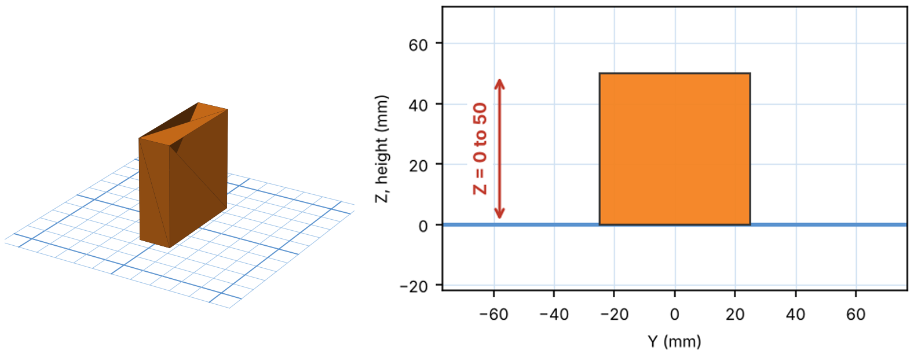
2The shoulder ball
- Drag a Sphere onto the workplane.
- Type the size: X 60, Y 60, Height 60. Set Steps to 20 in the shape panel so it looks round.
- Line it up: select the new shape and the shapes you already built (hold Shift and click, or drag a box around them). Click Align (or press L). Click the middle dot on the X row and the middle dot on the Y row. Do not touch the Z row. Both shapes may slide a little together. That is fine: they only need to be lined up with each other.
- Height: click the black cone ▲ above the shape and type the Z number below (or drag it up until it shows that number).
| Setting | Type this |
|---|---|
| Z (bottom of ball) | 25 |
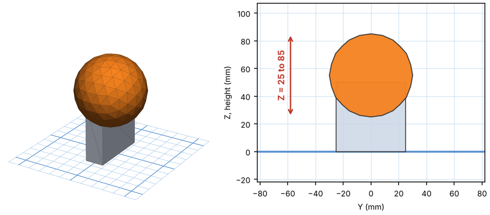
3Forearm outer tube
- Drag a Cylinder. Type X 36, Y 36, Height 90. Set Sides to 32.
- Line it up: select the new shape and the shapes you already built (hold Shift and click, or drag a box around them). Click Align (or press L). Click the middle dot on the X row and the middle dot on the Y row. Do not touch the Z row. Both shapes may slide a little together. That is fine: they only need to be lined up with each other.
- Height: click the black cone ▲ above the shape and type the Z number below (or drag it up until it shows that number).
| Setting | Type this |
|---|---|
| Z (bottom) | 55 |
| Top will be at | 145 |
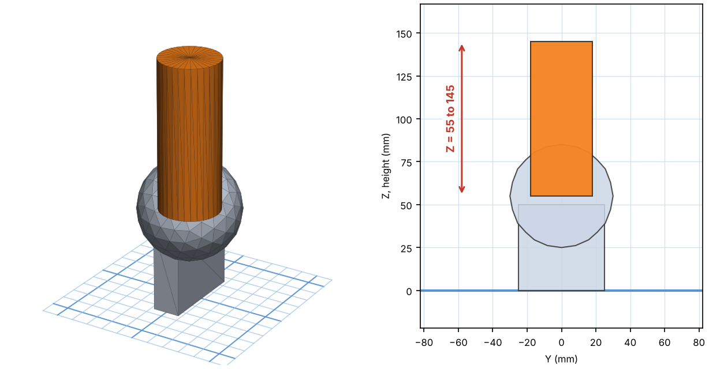
4Forearm inner tube
- Cylinder: X 26, Y 26, Height 65 (Sides 32).
- Line it up: select the new shape and the shapes you already built (hold Shift and click, or drag a box around them). Click Align (or press L). Click the middle dot on the X row and the middle dot on the Y row. Do not touch the Z row. Both shapes may slide a little together. That is fine: they only need to be lined up with each other.
- Height: click the black cone ▲ above the shape and type the Z number below (or drag it up until it shows that number).
| Setting | Type this |
|---|---|
| Z (bottom) | 135.5 |
| Top will be at | 200.5 |
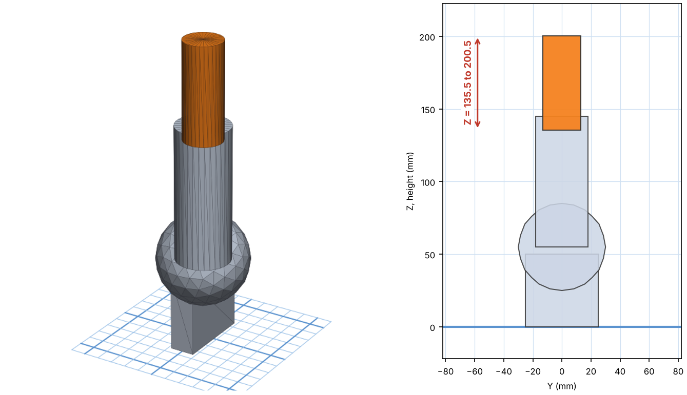
5Wrist hub
- Cylinder: X 50, Y 50, Height 30 (Sides 32). Colour it light grey.
- Line it up: select the new shape and the shapes you already built (hold Shift and click, or drag a box around them). Click Align (or press L). Click the middle dot on the X row and the middle dot on the Y row. Do not touch the Z row. Both shapes may slide a little together. That is fine: they only need to be lined up with each other.
- Height: click the black cone ▲ above the shape and type the Z number below (or drag it up until it shows that number).
| Setting | Type this |
|---|---|
| Z (bottom) | 205 |
| Top will be at | 235 |
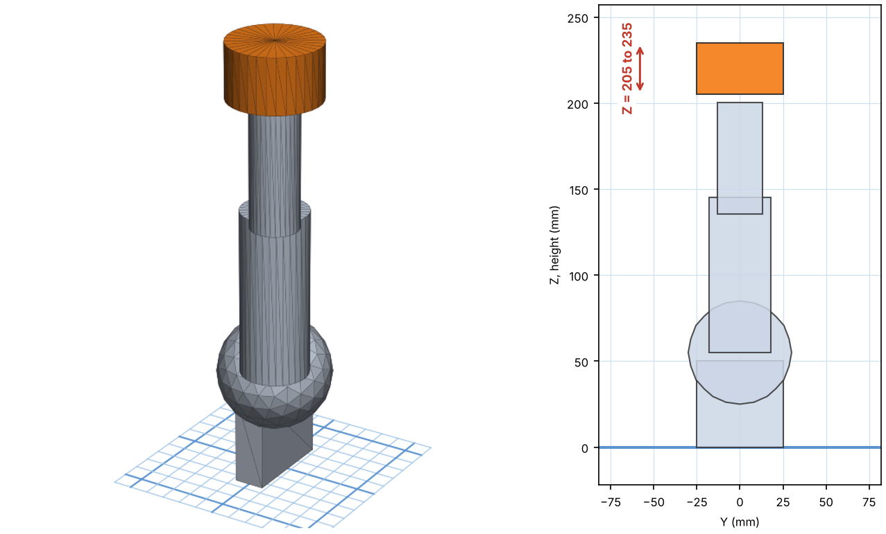
6The distance-sensor pod (blue)
- Cylinder: X 20, Y 20, Height 14. Colour it blue (this is the UGOT time-of-flight sensor).
- Line it up: select the new shape and the shapes you already built (hold Shift and click, or drag a box around them). Click Align (or press L). Click the middle dot on the X row and the middle dot on the Y row. Do not touch the Z row. Both shapes may slide a little together. That is fine: they only need to be lined up with each other.
- Height: click the black cone ▲ above the shape and type the Z number below (or drag it up until it shows that number).
| Setting | Type this |
|---|---|
| Z (bottom) | 232 |
| Top will be at | 246 |
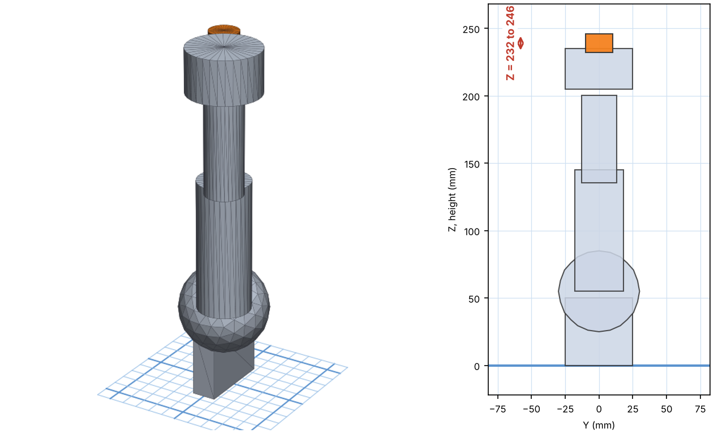
7aFinger base (finger A)
- Cylinder: X 16, Y 16, Height 43 (Sides 32).
- Line it up with the hub: select the new shape and the shapes you already built (hold Shift and click, or drag a box around them). Click Align (or press L). Click the middle dot on the X row and the middle dot on the Y row. Do not touch the Z row. Both shapes may slide a little together. That is fine: they only need to be lined up with each other.
- Height: click the black cone ▲ above the shape and type the Z number below (or drag it up until it shows that number).
- Move it sideways: with the cylinder selected, tap the ← arrow key 26 times (Snap grid must say 1.0 mm, bottom-right). It now sits 26 mm to the left of the hub's middle.
| Setting | Type this |
|---|---|
| Z (bottom) | 230 |
| Sideways | 26 mm to the left |
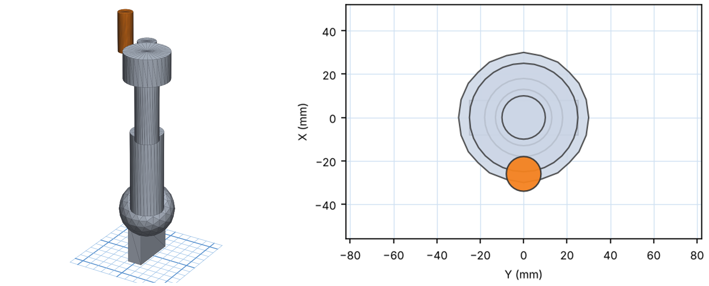
7bFinger tip (tilted 21°)
- Cylinder: X 12, Y 12, Height 33.4 (Sides 32).
- Tilt it: click the cylinder, then the curved rotate arrow at its side. Type 21 degrees so the top leans toward the middle of the hub, like a bent fingertip.
- Line it up: select the new shape and the shapes you already built (hold Shift and click, or drag a box around them). Click Align (or press L). Click the middle dot on the X row and the middle dot on the Y row. Do not touch the Z row. Both shapes may slide a little together. That is fine: they only need to be lined up with each other.
- Tap ← 20 times to put the tip over the finger base.
- Height: use the black cone and type 270.8 (the lowest point of the tilted tip).
- Select the base and the tip and press Ctrl+G to group them into one finger.
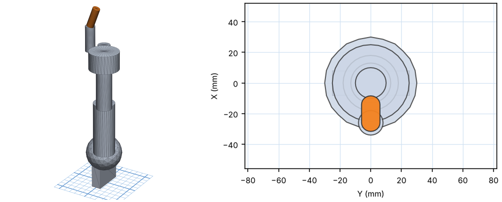
7cA helper disc, so fingers can turn around the arm
To make copies that spin around the arm (not around themselves) we add a temporary invisible disc that centres the turning point.
- Drag a Cylinder. In the shape panel choose Hole. Type X 68, Y 68, Height 1.
- Line it up: select the new shape and the shapes you already built (hold Shift and click, or drag a box around them). Click Align (or press L). Click the middle dot on the X row and the middle dot on the Y row. Do not touch the Z row. Both shapes may slide a little together. That is fine: they only need to be lined up with each other.
- Height: Z = 320 (above the fingers, so it cuts nothing).
- Select the finger group and the disc and press Ctrl+G.
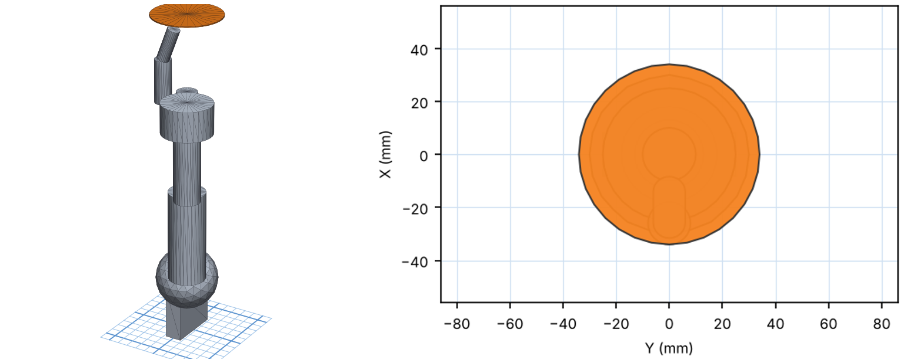
7dMake fingers B and C
- Select the group (finger + disc). Press Ctrl+D to duplicate it.
- Click the flat curved arrow on the workplane around the shape and type 120 degrees.
- Click the original group again, Ctrl+D, and rotate that copy 240 degrees.
- Select each of the three groups in turn and press Ctrl+Shift+G (Ungroup). Click each teal helper disc and press Delete (three discs).
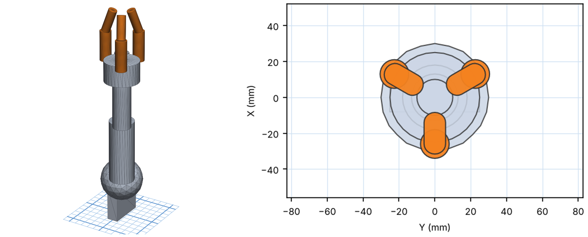
8Lay the arm down
- Press Ctrl+A to select everything, then Ctrl+G to group.
- Click the group. Use the curved rotate arrow on the side to tip it over by 90° so the arm lies flat and the bracket is a flat plate on the left.
- Press D (Drop) so the model sits on the workplane.
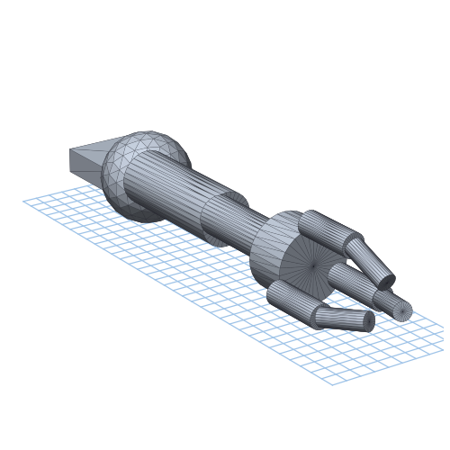
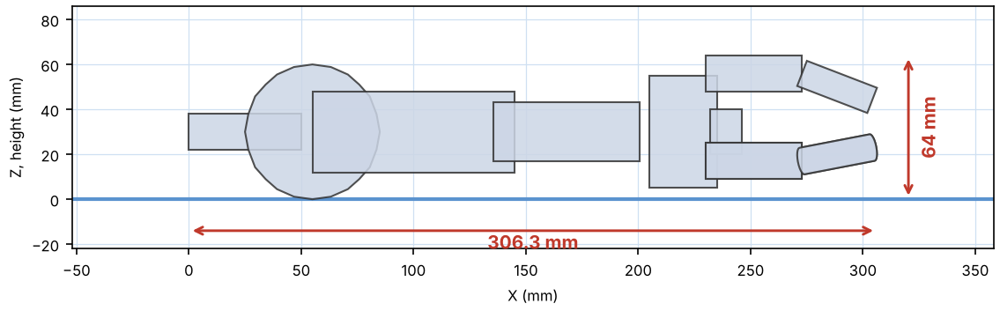
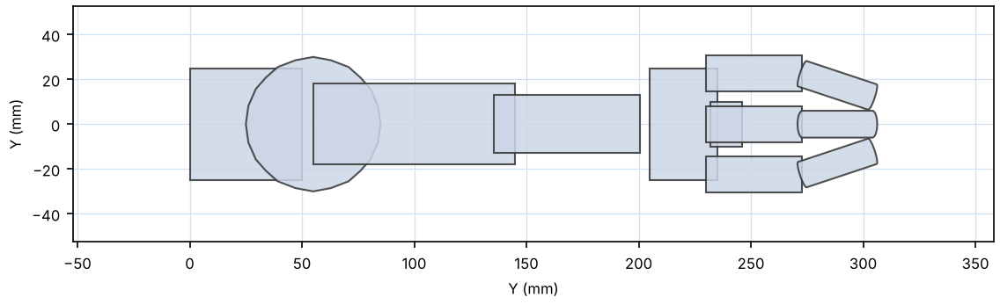
9Compare with the teacher's model
- Download UGOT_T04_CHOSEN_Claw-Reach_FINAL.stl.
- In Tinkercad click Import → choose the file → units mm → Import.
- Give the imported model a different colour. Select both models and use Align (middle dots on X, Y and Z).
- Look closely: if your model is right, the two almost completely overlap. Small differences (under 2 mm) are fine.
- Delete the teacher's model when you finish.
10Capture the three views
- Use the view cube (top-left of the workplane) and click FRONT. If you can right-click the cube and switch on Orthographic, do it: this removes perspective so the sizes look true.
- Take a screenshot (Windows: Win+Shift+S; Mac: Cmd+Shift+4).
- Repeat for TOP and RIGHT.
- Paste the three screenshots into a Google Slide / Doc side by side and crop them close.
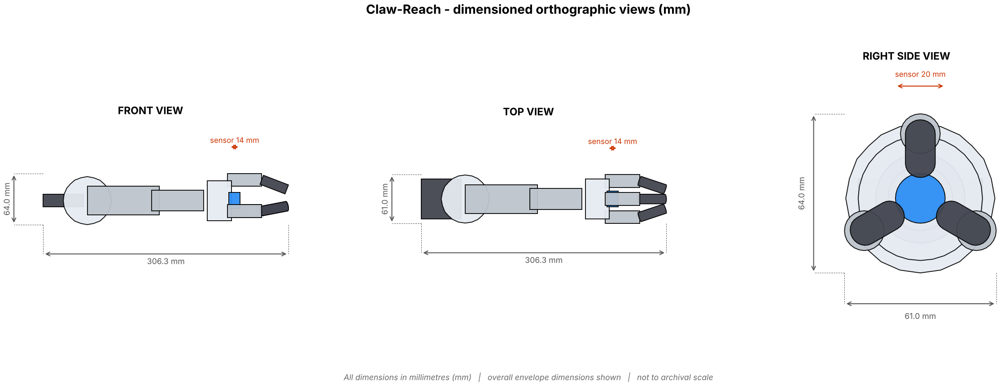
Model answer: front, top and right views with dimensions. Yours will look like this once finished.
11Add the dimensions
Draw arrows with the line tool (arrow at both ends) and type the sizes. A good drawing has the three overall sizes and the size of every part:
| Part | Dimension |
|---|---|
| Overall length | 306.3 mm |
| Overall width | 61 mm |
| Overall height | 64 mm |
| Bracket | 50 × 50 × 16 mm |
| Ball | Ø 60 mm |
| Outer tube | Ø 36 × 90 mm |
| Inner tube | Ø 26 × 65 mm |
| Wrist hub | Ø 50 × 30 mm |
| Sensor pod | Ø 20 × 14 mm |
| Finger base | Ø 16 × 43 mm (×3) |
| Finger tip | Ø 12 × 33 mm, tilted 21° (×3) |
12Save and export
- Rename the design (top-left) to Joint Rescue Claw-Reach – your name.
- Click Export → .STL and save it. This is the file a 3D printer slicer uses.
- If your teacher asks for a laser-cut bracket: Tinkercad can also export .SVG (a flat 2D outline) from the same Export menu.
- Upload your STL and your 2D drawing to the place your teacher tells you.
If something goes wrong
- A shape moved when I used Align: that is normal, both shapes line up with each other. Check Z is still right.
- The ball looks like a diamond: raise Steps to 20.
- A shape is below the workplane: select it and press D, then set the height again.
- The numbers will not type: click directly on the number box, not the handle.
🧠 Tinkercad skills quiz — Claw-Reach
Only about building in Tinkercad: shapes, sizes, handles, shortcuts, exports. Timed and auto-marked; your score is saved to the class sheet when you are logged in above. Read all four options: they are written to look alike.
🏁 Ready to play?
10 questions · 15 seconds each · explanations after every answer.